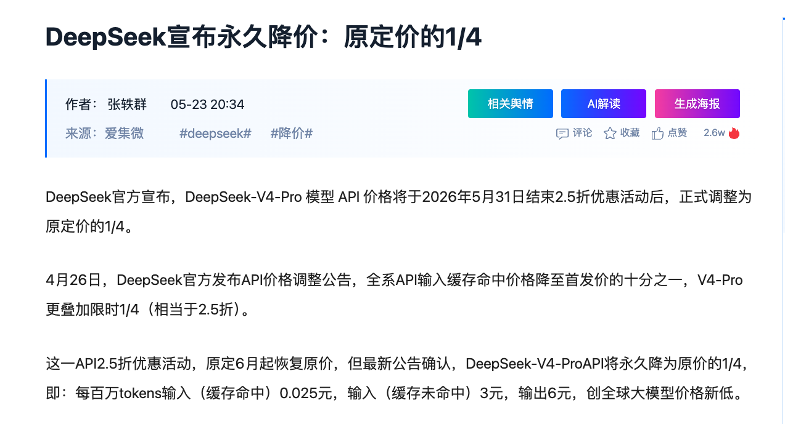
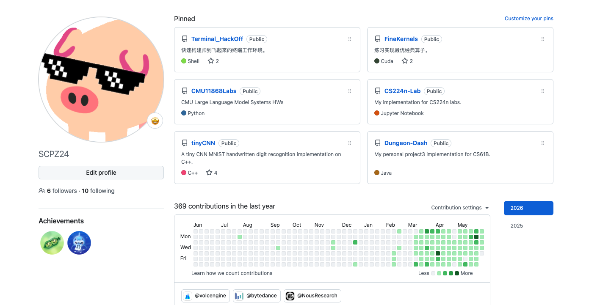
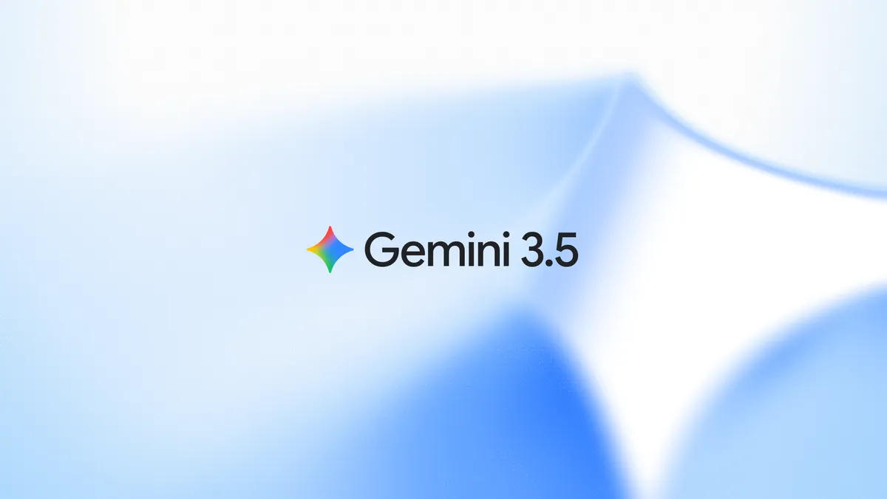
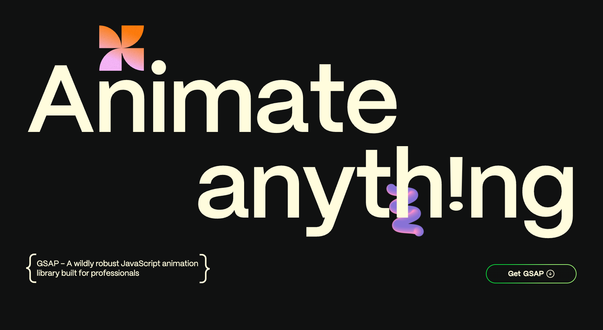

DeepSeek-v4-pro 永久降价

EP2
by 赵宇彤

AI News


Build Slides Like Web Apps

npm install openskillscd path/to/working/directory
openskills install https://github.com/lewislulu/html-ppt-skill
openskills syncSuper Agent
更智能，更炫酷，更可控，自定义
Comparison
Setup
git clone https://github.com/bytedance/deer-flow
cd deer-flow
cp config.example.yaml config.yaml
cp .env.example .envFrontend Workflow
让 AI 的前端不像 AI 做的
一个开源的动画库，可以用简单的 API 在网页上做动画
from
to
GSAP-skills：让 AI 更精准地控制 GSAP。

npm run dev默认在 localhost:5173
没有张老师就没有AgentFlow！